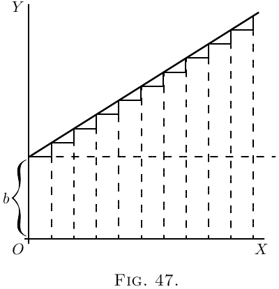
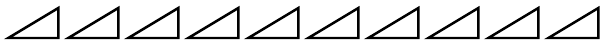

曲线的斜率和曲线本身
让我们对曲线的斜率做一个初步的调查。 因为我们已经看到，对曲线求导意味着找到其斜率（或其不同点处的斜率）的表达式。 如果为我们规定了斜率（或斜率），我们能否执行反向的重建整个曲线的过程？
回到此处的案例 (2)。 在这里，我们有最简单的曲线，一条斜线的方程是 \[ y = ax+b. \]
 我们知道这里 $b$ 代表 $x= 0$ 时 $y$ 的初始高度，而 $a$ 与 $\dfrac{dy}{dx}$ 相同，是直线的“斜率”。 直线具有恒定的斜率。 沿着它，基本三角形
的高度和底部之间具有相同的比例。 假设我们取有限大小的 $dx$ 和 $dy$，使得 $10$ 个 $dx$ 构成一英寸，那么就会有十个像这样的三角形
 现在，假设我们被命令仅从 $\dfrac{dy}{dx} = a$ 的信息开始重建“曲线”。 我们能做什么？ 仍然将小 $d$ 的大小视为有限，我们可以绘制 10 个，它们都具有相同的斜率，然后将它们首尾相连地放在一起，像这样：
并且，由于所有斜率都相同，它们将连接起来，就像图 48中一样，形成一条斜率为 $\dfrac{dy}{dx} = a$ 的斜线。 并且无论我们将 $dy$ 和 $dx$ 视为有限的还是无限小的，由于它们都相同，如果我们认为 $y$ 是所有 $dy$ 的总和，而 $x$ 是所有 $dx$ 的总和，则很明显 $\dfrac{y}{x} = a$。 但是，我们应该把这条斜线放在哪里？ 我们是从原点 $O$ 开始，还是从更高的位置开始？ 由于我们唯一的已知信息是斜率，因此我们没有关于原点之上特定高度的任何说明； 事实上，初始高度是不确定的。 无论初始高度如何，斜率都将相同。 因此，让我们试着猜测一下可能需要什么，并将斜线从 $O$ 上方 $C$ 的高度开始。 也就是说，我们有方程
\[
y = ax + C.
\]
现在很明显，在这种情况下，添加的常数意味着当 $x = 0$ 时 $y$ 所具有的特定值。
现在让我们来看一个更困难的例子，一条线的斜率不是常数，而是变得越来越大。 让我们假设，当 $x$ 增大时，向上斜率的增大程度也越大。 用符号表示，它是：
\[
\frac{dy}{dx} = ax.
\]
或者，为了给出一个具体的例子，取 $a = \frac{1}{5}$，因此
\[
\frac{dy}{dx} = \tfrac{1}{5} x.
\]
那么我们最好从计算一些不同 $x$ 值处的斜率值开始，并绘制它们的小图。
当